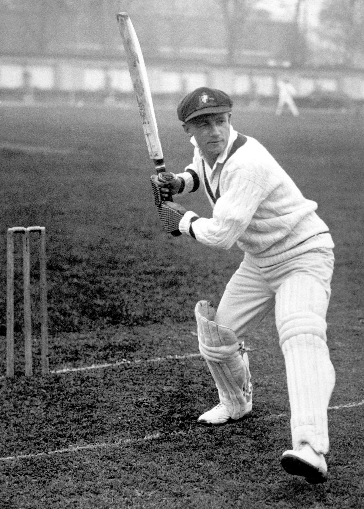

Tribute to Sir Don Bradman

Australian cricketer(1978-2001) ... The greatest batsman in the history of Australian cricket..!
Sir Donald George Bradman, born on August 27, 1908, in Cootamundra, New South Wales, Australia, was an iconic Australian cricket legend.
With an unmatched batting average of 99.94, Bradman is widely regarded as one of the greatest batsmen in the history of the sport.
Cricket Career:
- Bradman played 52 Test matches and scored a total of 6,996 runs.
* his all stats
- Test Matches Played: 52
- Innings: 80
- Runs Scored: 6,996
- Batting Average: 99.94
- Centuries: 29
- Half-Centuries: 13
- Highest Score: 334
- Double Centuries: 12
- Triple Centuries: 2
- Total Fifties: 13
- Balls Faced: 10,363
- Boundaries: 680
- Sixes: 6
These statistics reflect Bradman's exceptional batting prowess and the incredible impact he had on the game of cricket. His batting average of 99.94 is a record that still stands today and demonstrates his remarkable consistency and dominance as a batsman.
- Known for his impeccable technique and exceptional hand-eye coordination, he set new standards for run-scoring.
- His dominance in batting and consistency made him a symbol of excellence in cricket.
Ashes Rivalry:
- Bradman's performances in the historic Ashes series against England were remarkable and set numerous records.
- He played a pivotal role in several Ashes series, showcasing his extraordinary skill and talent.
Legacy and Impact:
- Bradman revolutionized batting techniques and became an inspiration for future cricketers.
- Known for his sportsmanship, integrity, and humility, he upheld the spirit of the game.
- His contributions to cricket extended beyond his statistics, making him an enduring figure in the sport.
Off the Field:
- After retiring from playing, Bradman remained involved in cricket through coaching and cricket administration.
- He shared his expertise and insights with younger players, leaving a lasting impact on the development of the game.
Honors and Recognitions:
- Bradman was knighted by Queen Elizabeth II in 1949 for his exceptional contributions to cricket.
- The Don Bradman Award, named in his honor, is presented annually to the best male and female cricketers in Australia.
- He received numerous accolades and honors throughout his life, recognizing his immense impact on the sport.
He used to say
- "I hated losing, but I never got too upset about it because I always felt there was another game I could win."
- "A batsman's comfort lies in the fact that he knows that, even if he fails, he has succeeded in the game of life."
Bradman believed that passion and determination were crucial for success in cricket, stating that talent alone was not enough.His commitment to honesty and dedication is often cited as a key factor in his success.